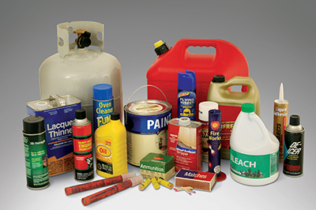
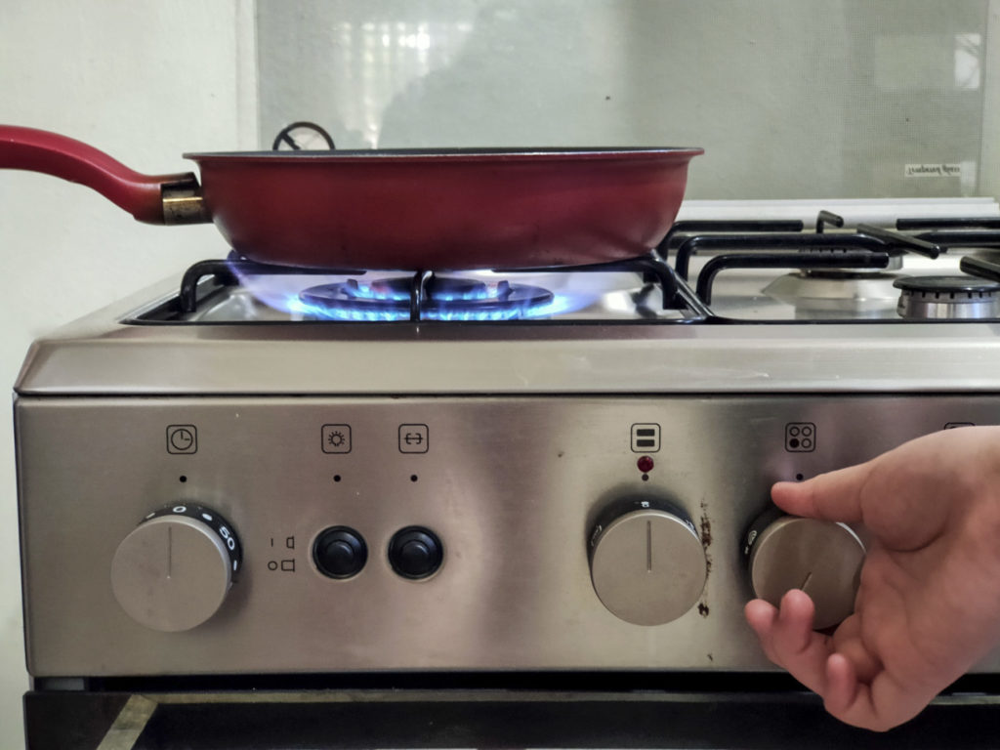
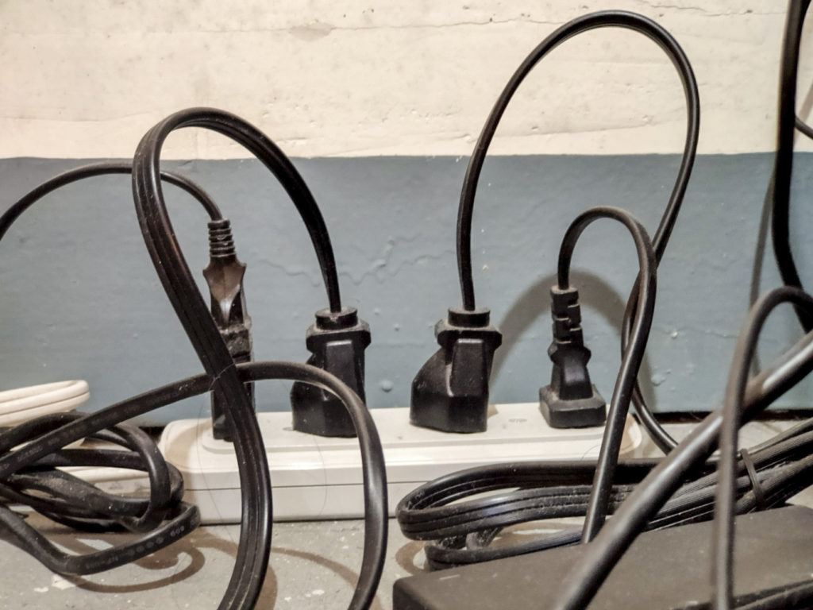
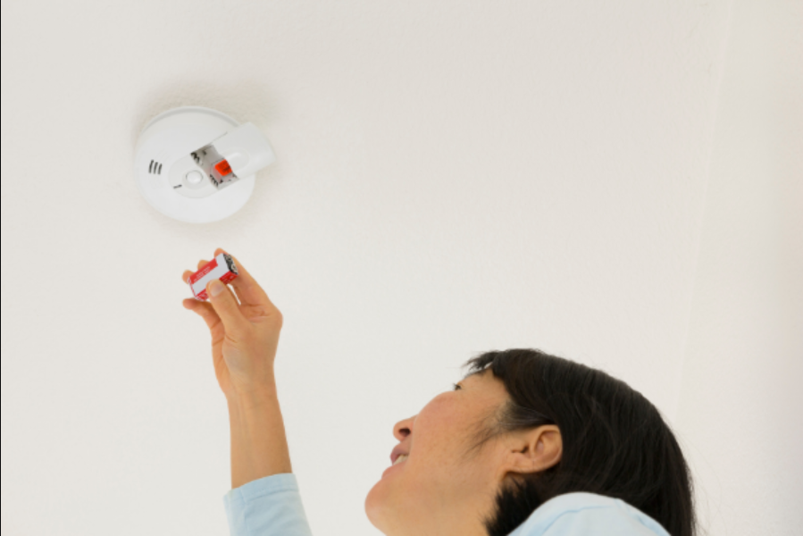

#FirePreventionMonth
| Ways of Prevention | Reasoning |
|---|---|
|  Keep Flammable Materials in a Secure PLace | It's a good idea to store any and all flammable materials in safe and secure places away from anything that could set them ablaze. They should also not be all stored in one area of the house to avoid all of them bursting into flame at the same time. Another thing to keep in mind is to keep both flammable materials and firestarters in locations where a child cannot easily access them so that they do not accidentally injure themselves or ignite or consume the chemicals. |
|  Do Not Leave Stoves or Open Flames Unnattended | After cooking, always remember to double check your stove to see if it's off and never leave it unnattended to avoid anything catching fire. This also goes for any open flames around your house such as lit candles and fireplaces. |
|  Don't Use All Plugs on An Extension Cord | Utilizing all of the sockets on an extension cord for an extended amount of time may result in them overheating and possibly even catching fire if it goes on for too long. It would be better to unplug any plugs that are not currently being used or maybe use them later. |
|  Get a Fire Extinguisher and Smoke Detectors | Fires could happen at anytime on any day in your house, so it would be a wise decision to install some smoke detectors throughout your home and buy a fire extinguisher to allow you to put out fires quickly and more efficiently. |